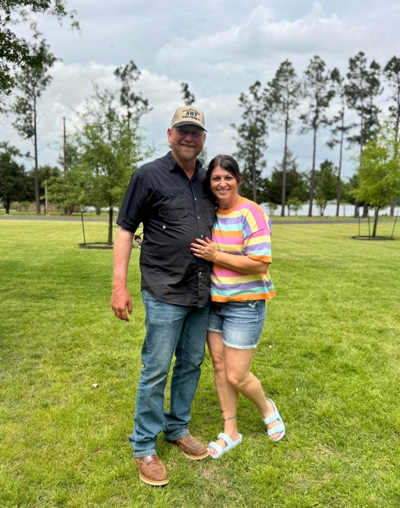

The guy who answers the phone is the same guy who shows up to your jobsite. That's been true since day one.
Paul Pogue started Area Wide Paving in 2003 with a single truck and a simple idea: show up, do the work right, and don't hide behind a sales team. Twenty-two years later, the company has paved thousands of driveways and parking lots across 12 Northeast Texas counties — and Paul still answers every phone call personally.
There's no call center. No dispatcher. No "your representative will call you back." When you dial (903) 885-6388, Paul picks up. When the crew shows up Monday morning, Paul is driving the lead truck. When the roller makes its final pass, Paul walks the finished surface with you.
That's not a marketing line. That's how a 4.9-star Google rating gets built over two decades — one driveway, one handshake, one callback at a time.
Paul is on every jobsite. Not a foreman. The owner.
Our crew, our equipment, our responsibility.
Every line item spelled out. No mystery charges.
Call today, written quote by tomorrow.

No forms. No voicemails. No runaround.
(903) 885-6388